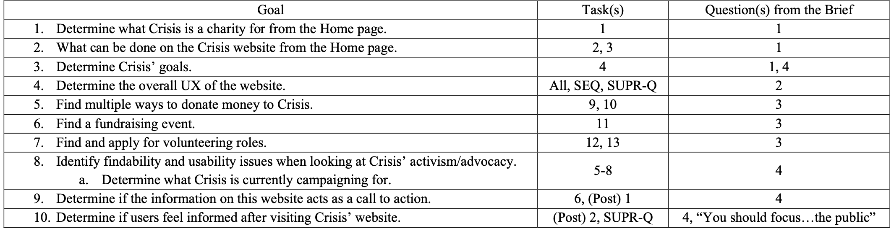
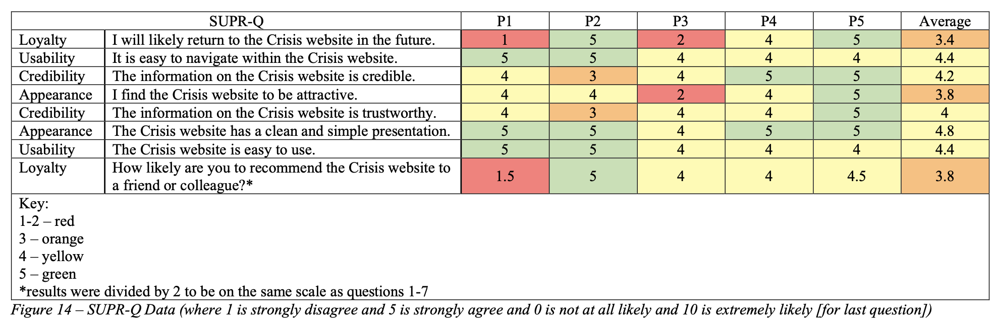
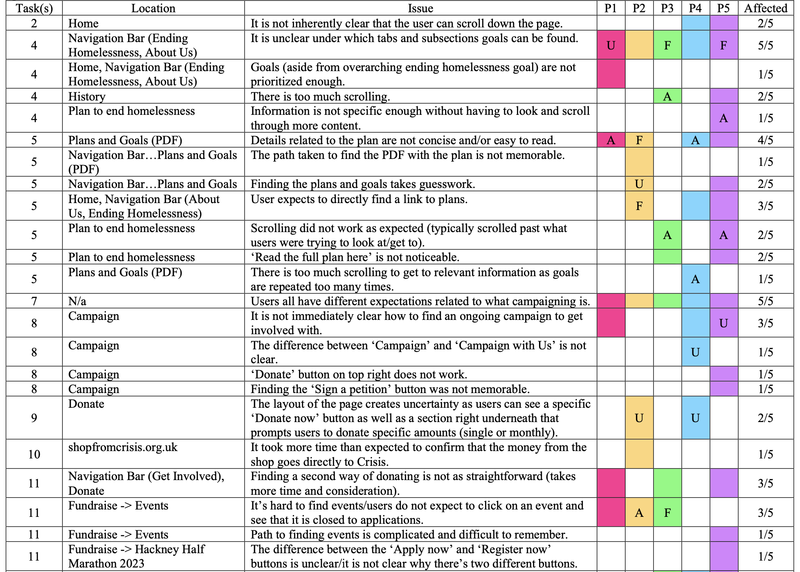
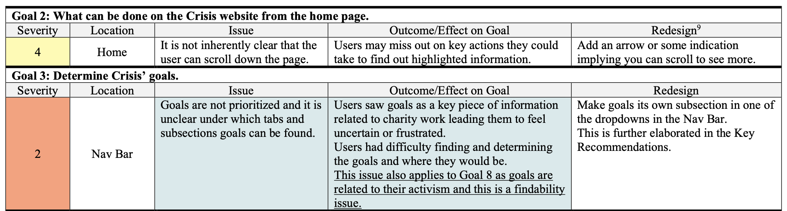
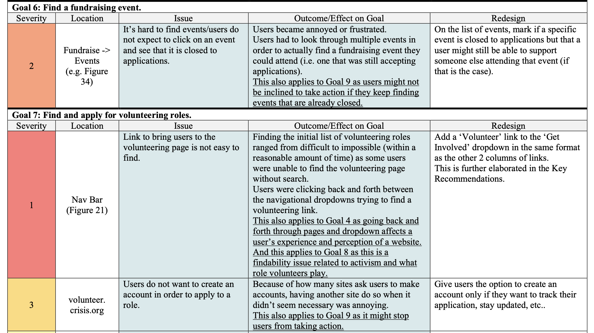
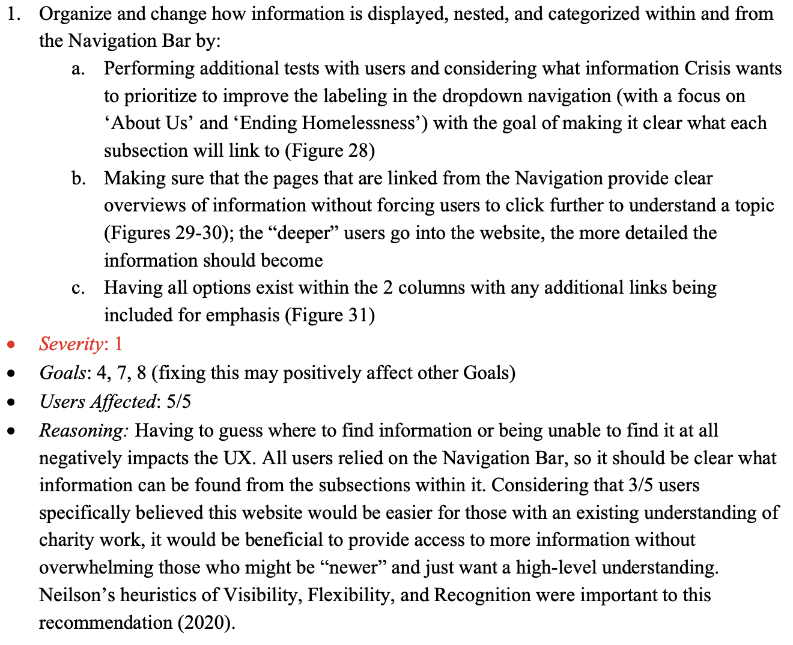

Evaluation of A Charity Website
Goal
To evaluate a website with target users in order to create a rainbow spreadsheet and offer critical design recommendations.
Tools
Microsoft Word, Qualtrics, Remote Interview Moderation (Microsoft Teams) and Recording (QuickTime) Software
Goals from the Brief
For my Evaluating Interactive Systems class, I established which methods would be best for me to use to gather the information I believed I would need.
My first step, however, was expanding upon the brief to set the following specific goals:

Script
Writing a script (of tasks), loosely framed by a scenario, both made sure users reached the areas of the website the brief wanted to address and made the evaluation feel more realistic by giving users purpose.
Consent Forms
I wrote a consent form and required each participant to read, sign, and return the form before their session.
Questionnaires
To find if users struggled while using the site, the Single Ease Question (SEQ) was asked after certain tasks.
A SUPR-Q questionnaire was sent out to each participant via Qualtrics at the end of their interview as elements related to ease of use, trust, and appearance were relevant to the brief/goals.
The following is the result of the SUPR-Q questionnaire as listed in my report:

Testing Sessions
In total, I held 5 remote, moderated sessions (in addition to a pilot session) and used a classic Think Aloud protocol.
Due to limited resources, these sessions had to be remote.
However, the moderation and protocol were chosen as it was important to understand what the users were feeling in addition to "the why" behind their decisions.
Coding the Data
Transcripts from each participant were summarized and coded.
I established 3 codes to note whether a comment was positive, something the user would have liked to have or have been able to do, or was negative (e.g. triggering feelings of annoyance or frustration).
Using Qualitative and Quantitative Data
The qualitative data, alongside the quantitative data from the questionnaires, was used to answer each requirement from the brief (in the form of a short summary).
Because of the small number of participants, on its own, the quantitative data would not have been strong enough.
So it was used to reinforce conclusions drawn from the qualitative findings.
Rainbow Spreadsheet
Before writing the design recommendations, I created a rainbow spreadsheet to help me discover where the issues participants ran into overlapped.
I then created another spreadsheet to further group and organize each issue by goal, to clarify what effects these issues would have on the goals, to rank them by severity, and to offer more potential re-design recommendations.

I then created another spreadsheet to further group and organize each issue by goal, to clarify what effects these issues would have on the goals, to rank them by severity, and to offer more potential re-design recommendations.


Design Recommendations
This data was translated to design recommendations.
The main portion of the report required 4 main design recommendations ranked by severity.
I chose to base my ranking system on Dumash and Redish’s work as they considered “a global versus local dimension to the problem.”
The following is an example of one of the recommendations from my report:

The Final Report
If you would like to read the full report, please send me an email at raveena.s.jain@gmail.com
and let me know whether you are a potential employer or student looking to read it.